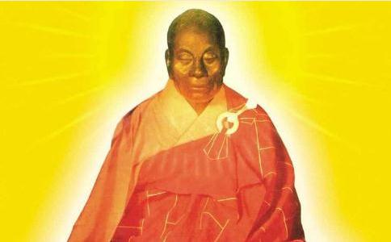

唐高宗龙朔元年的一天，蕲州黄梅县（今湖北省黄梅县)东山寺钟磬交鸣，信众如云，
堂下来了一位年轻人，身上的衣裳四下透风，一走动便鼓荡起来。弘忍见他蓬头跣足，猜知他是远道而来，心头不由一热：又一位虔心求佛的人，便特地问道：“你从何处而来？”
年轻人答道：“从岭南来。”
堂上的人哄地笑起来。
当时的岭南还是偏僻蛮荒之地。
弘忍又问：“来此做什么？”
那年轻人昂首答道：“来此求做佛！”
堂上的人笑得打跌，一下子也把寺里的清规戒律忘了个干净。
弘忍见他口气狂妄，不禁笑道：“我这里聚集大众，也无非都是来求些福报，得点好处，你倒想求做佛？岭南偏僻之地，你又是乡下人，无知无识，哪里会有
年轻人恭恭敬敬地回答：“地分南北，佛性并无南北；人有高下，佛性应无高下。”
弘忍大吃一惊，眼前这个“葛僚”慧根茁壮，真乃
“我只会干些粗重杂活。”年轻人还是很恭敬地回答。
堂上有人大声打起哈欠。
弘忍挥挥手，说：“那就到碓房舂米去吧！”
那年轻人从此就在碓房舂米劈柴，尽心尽力，供奉众人。有时得空也站在禅房外听弘忍
这个年轻人就是后来的禅宗六祖慧能。
慧能本来姓卢，祖籍范阳（今河北省涿州市），父亲有过一官半职，后被贬谪岭南新州（今广东省新兴县)，死在任所。惠能从小与寡母相依为命，靠他砍柴维持
有一日，他在集市上卖完柴，听见旁边一个客人念诵
他忍不住上前问那个客人，所念是何种经典。客人告诉他，是《
过了好几个月。这日，弘忍聚集门下
弘忍的衣钵会传给谁呢？大家兴奋了一阵，因为谁得了衣钵，谁就算是禅宗六祖，他说的话便字字珍珠，句句黄金，禅宗里的是非全凭他一人裁断，可了不得！大家不约而同地想到神秀。
原来，神秀是弘忍门下最得意的弟子。他少年时便博览群书，熟读佛典，而且跟随弘忍多年，颇受赏识，做到上座，经常代弘忍向大众讲学。
这不是明摆着的嘛，弘忍何苦弄个把戏来哄咱们？众人都不存做偈念头。
神秀见大家都不做偈，心里也明白，便故意督促众人赶紧用功。众人嘈嘈嚷嚷：“我们这些凡胎，如何能与你相比。有你在，我们还有谁敢存奢望做六祖？这受衣传法重任，自然是非上座莫属。等你得法之后，我们再跟你
一席话说得神秀飘飘然，似乎平白高出两丈来，一伸手，就能把那件万众敬仰的
“我已做好一偈，不知能否表达我胸中深浅。”
神秀前呼后拥，行至佛堂南廊，早有人递过笔来，神秀将偈写在墙壁上：
身是菩提树，心是明镜台；
时时勤拂试，忽教惹尘埃。
众人齐声喝采，弘忍走过来，读过偈，沉吟片刻，使召集一寺僧众，令念诵此偈。说，依此
弘忍传唤神秀进入后堂，神秀暗自高兴。
弘忍问：“此偈是你所作吧？”
神透拜道：“是我所作。请师父指点。”
弘忍笑笑说：“我知寺中无人能作此偈。此偈境界，说明你已到门口，但尚未入门哩。按如此见解，尚未见本性，即不能得无上智慧。要得到无上智慧，必须在当下认识本心，照见自性，于一切时中，不生不灭，念念自见，方能万法无滞，左右逢源，一真而一切真。你且回去，再想一两日，再做一偈，拿来我看。若能
神秀内心一炉炭火，猛被泼了盆冷水，嗞嗞冒出的青烟，扰得他坐卧不安，心思散乱，偈不知从何做起。
惠能对此毫无所知。这日，他听碓房门外一个童子边走边唱一首偈，心中一动，忙唤住童子，问他所唱是什么。
童子道：“你不知道，前几日大师欲传衣钵，令人都作偈，说谁懂得佛法大意，就做六祖。神秀上座在南廊墙壁，写了这首无相偈，大师令我等每日唱诵。”
慧能一听便哈哈大笑。童子问：“你笑什么？有本事你也作首偈让我们看看。”
慧能说：“我也作了首凑热闹。不过，我不识字，请小师傅帮我找个人写下如何？”
童子把慧能带到南廊下。听说葛僚也要作偈，寺里的和尚都跑来起哄。
“居然想和神秀上座同列一壁，这人怕是疯了吧？”
“好好劈你的柴火，莫要自讨没趣。”
“好，我来帮你写，看狗嘴今日长出什么象牙来！”
慧能只是微笑，一字一字念出偈来：
菩提本无树，明镜亦非台；
本来无一物，何处惹尘埃。
众人拍掌大笑。“菩提不是树，明镜也不是台，真是一派胡言乱语，不通不通！”“本来无一物，岂不是说连
弘忍闻声赶来，一见此偈，心中不禁狂喜：慧能的偈简洁明快地表达了明心见性，即心即佛的境界！但弘忍一转念：历代为这法衣，不知起多少争端，枉送许多人性命。惠能地位卑贱，若有人生邪心，要害他易如反掌。当下摇摇头，转身离去。
众人见弘忍并无半点喜悦，也就散了。过了一会，弘忍四顾无人，便去到碓房。只见慧能腰间挂块大石，正在舂米，挥汗如雨，又笑容满面地在唱歌，大概是老家的俚曲，呕哑嘈杂，也不知唱些什么。弘忍不由感叹道：“见性成佛，随处
慧能会意，当晚三更时分，来到弘忍房中。弘忍神色庄重，将一件都认不出原来颜色的袈裟授予慧能。说：
“这就是
慧能问：“走去哪里？”
弘忍道：“从哪里来，回哪里去。”
弘忍亲自将慧能送到江边，并要摇橹送他过江。慧能夺过船橹说：“师父，应让弟子来！”
“我是师父，自然应是我度你。如何能让你度我？”
慧能知道话里有禅机，便回答说：“慧能迷时，由师父度我；慧能觉悟时，我应自己度自己啦！”
师徒俩相视大笑。弘忍高兴地下了船，看着慧能孤身驶向南岸。
一连三日，东山寺里静悄悄的。弘忍不再上堂说法，弟子感到莫名其妙，就推神秀去问：“师父为何不再升座演说佛法？”
“此地已无佛法。佛法已经南下。”弘忍淡然道。
神秀大惊失色，慌忙问：“谁得了佛法？”
弘忍道：“能者得之。”
神秀跟大家一说，仔细想了一回，想起碓房慧能正好不见了三日。岂有此理，法衣让这还未曾
赶在最前面的一个叫慧明，原是陈朝宣帝的孙子。做过将军，性如烈火。他投到弘忍门下好几年，都没得到证悟，早急得象热锅上的蚂蚁。一听说佛法南下，便一马当先，在大庚岭追上了惠能。
慧能心想，法衣既然是传法的凭信，岂是谁强暴便归谁的？便将法衣放在石头上，自己在一边趺坐。
慧明看见法衣，一阵狂喜，伸手就取。忽然心意一动：我夺到法衣，难道就是禅宗六祖了？达摩祖师那张威严的面孔一下子浮出慧明的脑海。这一想，弄得耳热心跳，汗流浃背。只觉手中的法衣沉重如须弥山，竟似拿不起了。
慧明心有所悟，立即上前
慧能道：“不思善，不思恶，此时此刻，便是你真实面目！”
慧明大叫一声，心下豁然开朗，连拜几拜说：“我在黄梅多年，从来未知自己本来面目，无法把握自己。今日蒙师父揭破魔障，顿悟佛性，真个是哑子吃蜜一般！”
这样，慧明成了慧能出道后的第一个弟子。
慧明请慧能继续南下，自己仍留在原地。
不一会，北方路上烟尘滚滚，大队人马赶到。慧明说：“我在这里守候多时，未见踪影，估计葛僚还未来到，不如回头细细寻查！”于是大家咒骂着又转回去。
慧能脱身之后，在山林里埋名隐姓，一晃过了十五年。
这天，他来到广州法性寺。正好赶上该寺住持印宗法师讲《
一人先说：“旗幡实是因风吹而动。”
另一个人反驳道：“旗幡并没动，是风在动。”
这时，慧能在人丛中站起来说：“不是风动，也不是幡动，而是观者的心动。”
印宗一听大惊，此人谈吐举止不同寻常，必有来历。连将他请入寺里，提了一些玄奥的问题，表示请教。慧能随手拈来日常生活现象，一一解答，无比透彻明白。印宗问：“
慧能出示法衣，印宗肃然起敬。又问：“弘忍大师可有指授？”慧能答道：“并无指授。也不需要什么指授。学法惟在见性，只要见性，担水砍柴，皆可成佛！“
印宗对众人道：“今日听了和尚说法，何为珠玉，何为瓦砾，你们该有心得。”
众人听慧能指出这么一条快捷简便的路子，撇开繁琐的戒律，只凭内心领悟自性就可成佛，无不耳目一新，感到身心自由如飞。慧能的活动，开创了
这一年，是唐高宗仪凤元年（676年）
这一年，慧能才由印宗和智光两位法师主持受戒，正式成为一名僧人。
不久，慧能离开法性寺，到了韶州（今广东省韶关市）曹溪畔的宝林寺做住持，广收门徒，名声大噪。禅宗这一奇葩，在风景秀丽的曹溪越开越盛。